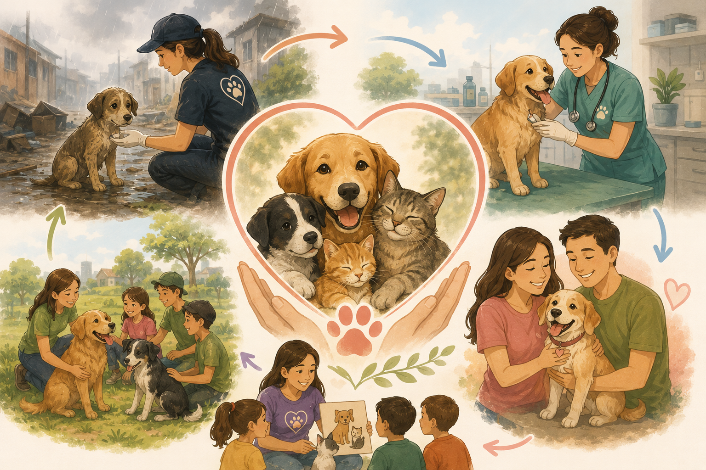
Mision
Rescatar, rehabilitar y reubicar animales que estan en peligro, promoviendo la adopcion responsable y la educacion en las comunidades para construir una sociedad que cuide mejor a los animales.
Fundacion de Rescate Animal
Cada animal merece una segunda oportunidad.
Tu puedes ser parte del cambio.
Desde 2015 rescatamos, rehabilitamos y reubicamos animales que estan en la calle o en situacion de maltrato en Colombia.
Atendemos emergencias y le damos atencion veterinaria y rehabilitacion a cada animal que rescatamos.
Tenemos una red de hogares temporales donde los animales reciben atencion mientras encuentran su familia definitiva.
Acompanamos todo el proceso de adopcion y hacemos seguimiento despues para que todo vaya bien.
Hacemos talleres, jornadas de esterilizacion y campanas para que la gente sepa como cuidar bien a sus mascotas.

Rescatar, rehabilitar y reubicar animales que estan en peligro, promoviendo la adopcion responsable y la educacion en las comunidades para construir una sociedad que cuide mejor a los animales.
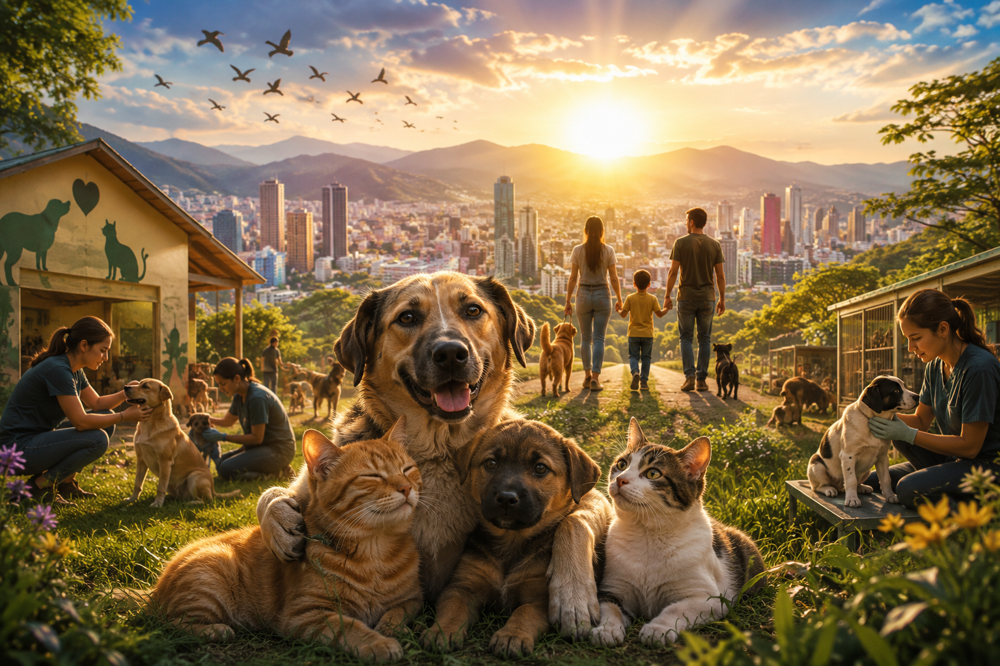
Ser la fundacion mas importante en bienestar animal en Colombia para el 2030, logrando que ningun animal viva abandonado o maltratado en nuestras ciudades.
Momentos que cambian vidas
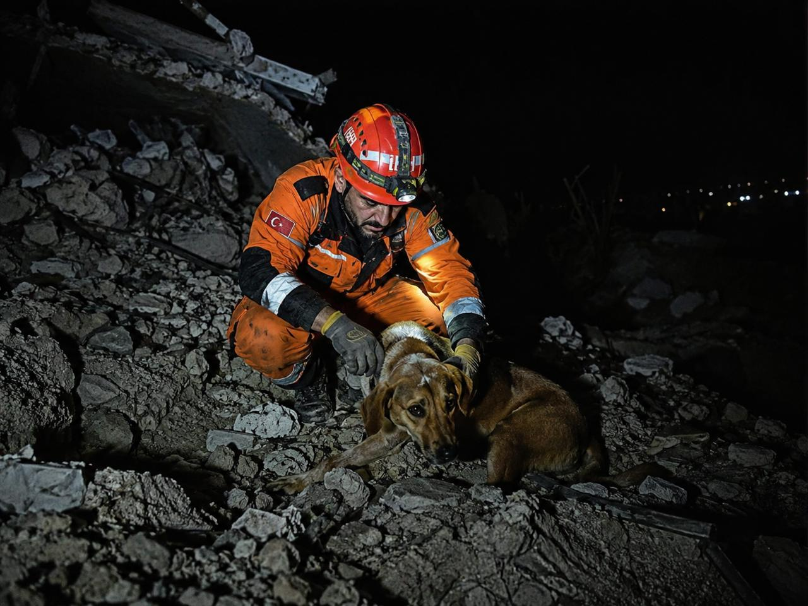
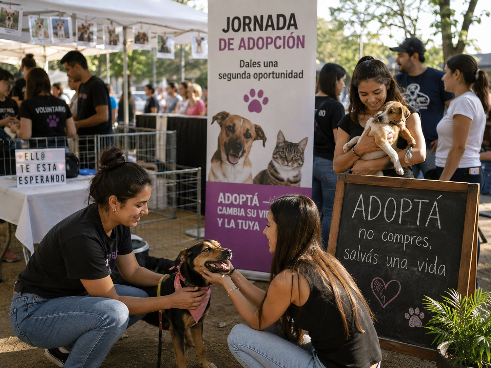
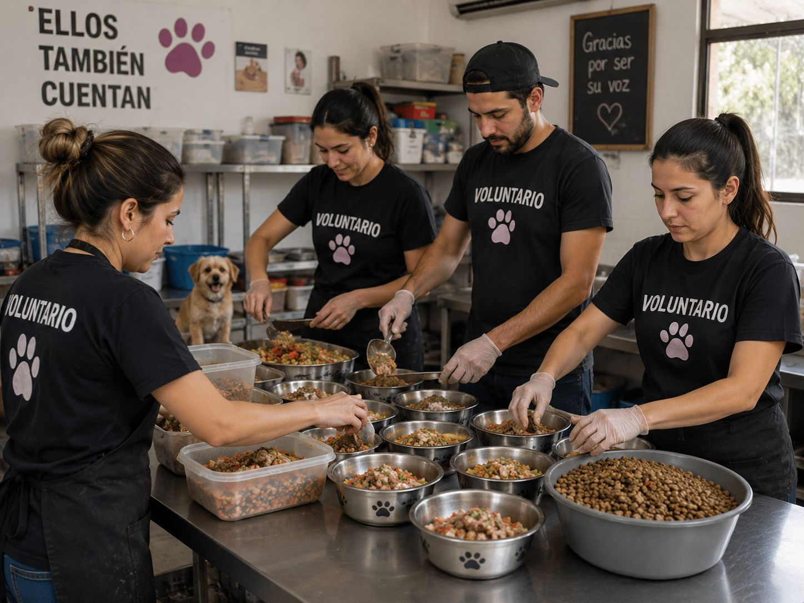
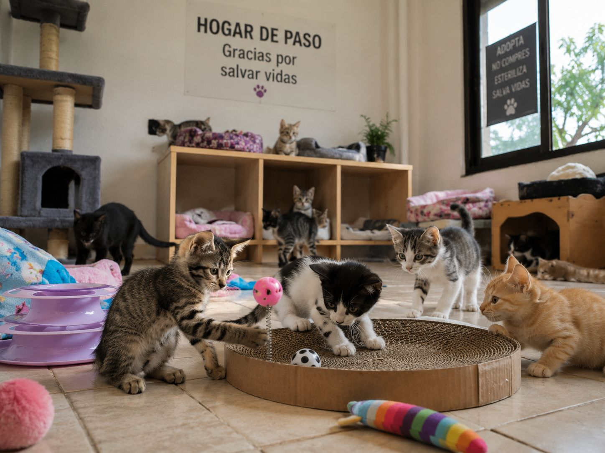
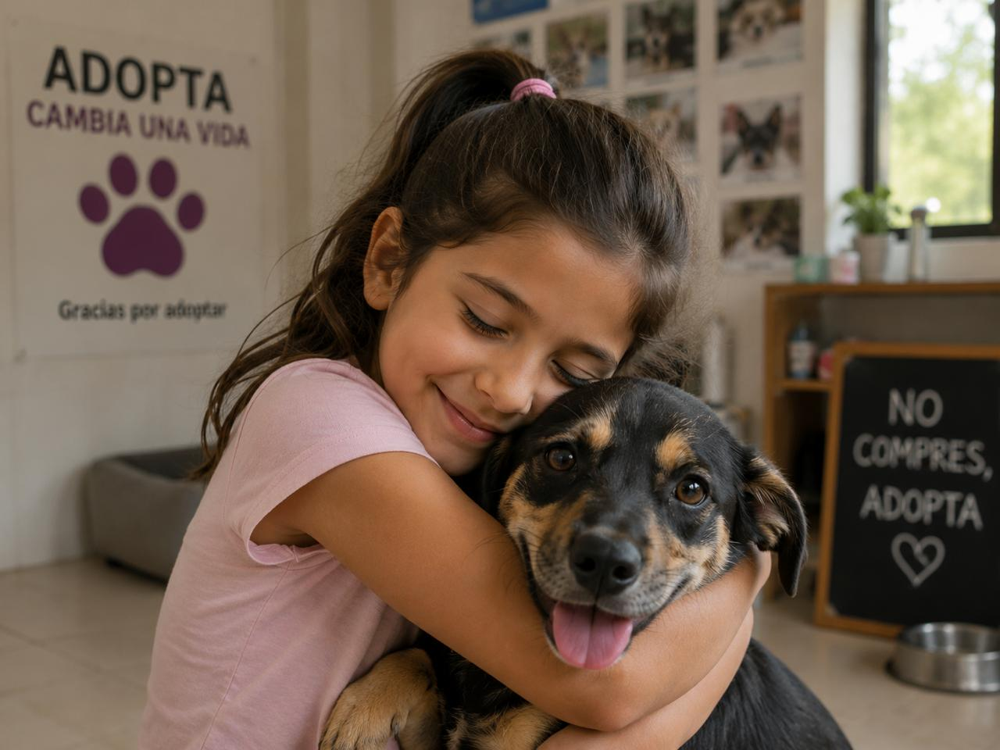
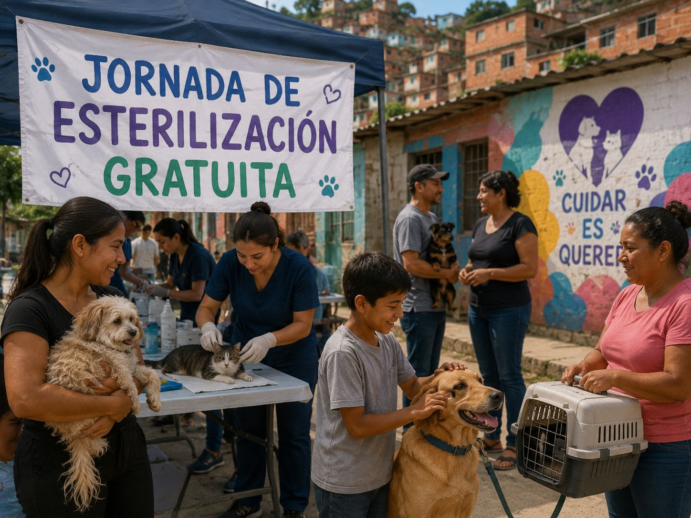
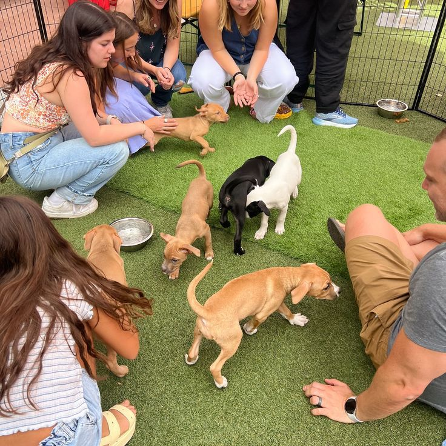
Encuentra tu companero ideal. Cada uno esta esperando un hogar.
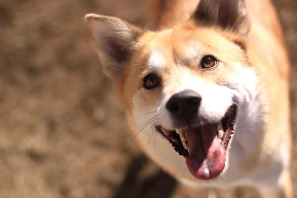
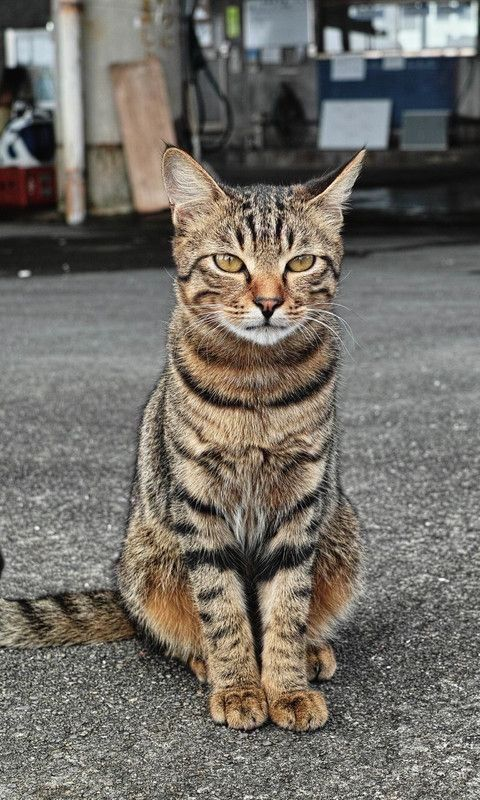
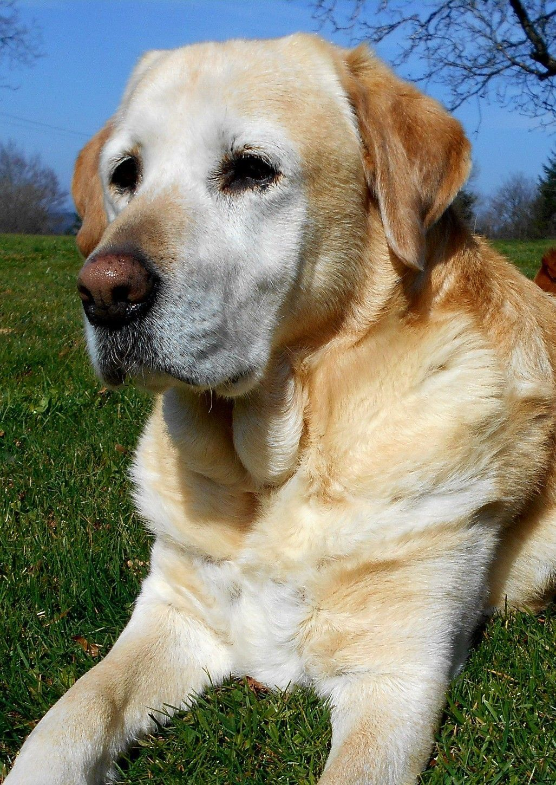
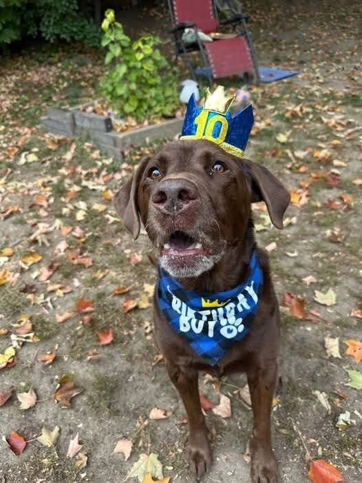
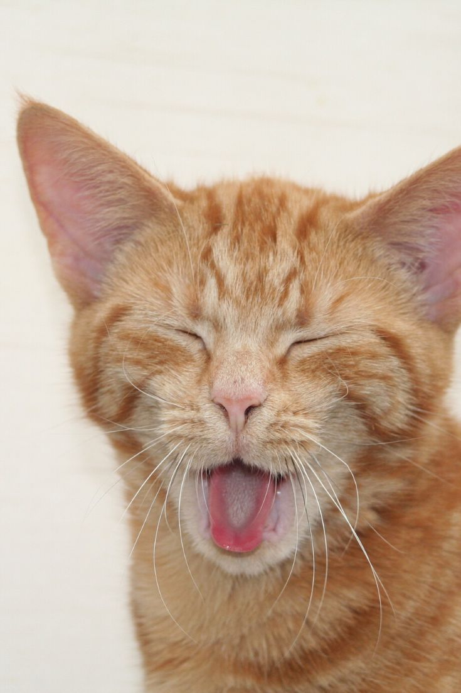
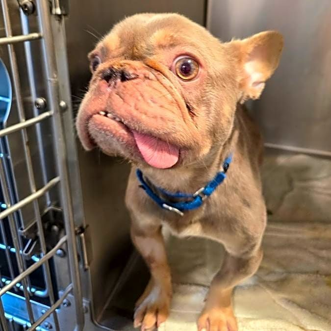
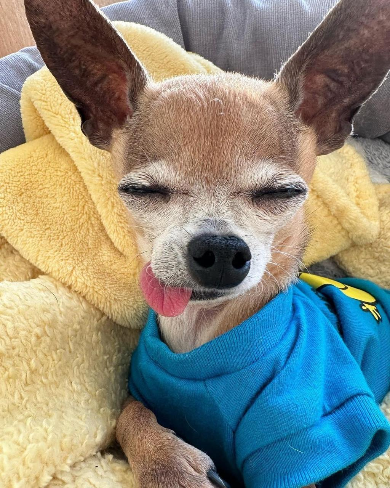
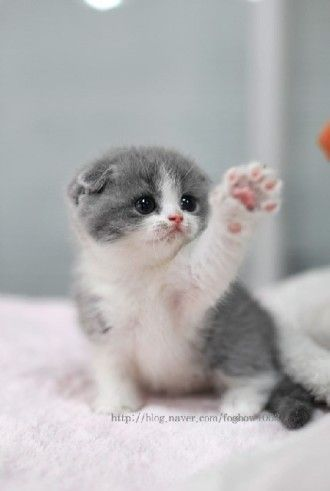
"Adoptar a Luna fue la mejor decision de nuestra familia. El equipo de Patitas Felices nos ayudo en cada paso y hoy Luna es el alma de nuestra casa."
"Llevo dos anos como voluntario y ha sido algo que cambio mi forma de ver las cosas. Ver a un animal pasar del miedo a la confianza no tiene precio."
"Donar a Patitas Felices es saber que tu plata llega de verdad a quien la necesita. Son honestos, comprometidos y le ponen el alma a lo que hacen."
Con tu donacion cubrimos veterinaria, comida y el cuidado diario de mas de 80 animales que hoy estan bajo nuestro cuidado.
$20.000 / mes
Cubre la comida de un animal durante un mes completo.
Donar ahora$60.000 / mes
Apadrina a un animal y recibe novedades de su progreso cada mes.
Donar ahora$150.000 / mes
Tu aporte cubre atencion veterinaria completa para un animal rescatado.
Donar ahoraTambien puedes hacer una donacion unica del valor que puedas. Escribenos y te decimos como hacerlo.
Tu tiempo y tus ganas pueden cambiar muchas vidas. Sumate al equipo.
Lleva animales rescatados al veterinario o a hogares de paso.
Alberga a un animal en tu casa mientras consigue hogar definitivo.
Ayudanos a mostrar la historia de nuestros animales en redes.
Participa en talleres y charlas sobre como cuidar bien a los animales.
Tienes preguntas o quieres adoptar, donar o ser voluntario? Escribenos.